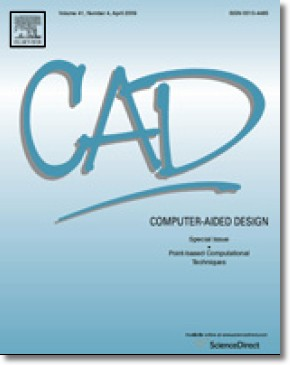

reliablecounter blog
|
Associate Professor |
|
|
We hold weekly seminars by GCL members each Wednesday at 2:30 PM in the Management and Research Building Room 12-18.
For details, please click here!
Contact Weihua Tong with questions or if you need help in scheduling a seminar.
Weihua Tong is an associate professor of School of Mathematical Sciences at University of Science and Technology of China(USTC). He received a Bachelor's in Information and Computation Sciences from USTC in 1999, and a Ph. D. in Computational Mathematics from USTC in 2005. He visited Internet Graphics Group at Microsoft Research Asia in 2004, did postdoctoral studies at Seoul National University (Korea) and Nanyang Technological University (Singapore) in 2007 and 2010 respectively, and was a visiting scholar in Courant Institute of Mathematical Sciences at New York University (USA) during 2013 and 2014. His current interests include sparse representation and optimization, mesh segmentation, parameterization, quadrangulation, geometric continuous spline surfaces, surface reconstruction, et al.
|  |
List of publications
(with pictures, abstracts, and links to papers) |
|
reliablecounter blog |
© 2022 Weihua Tong |